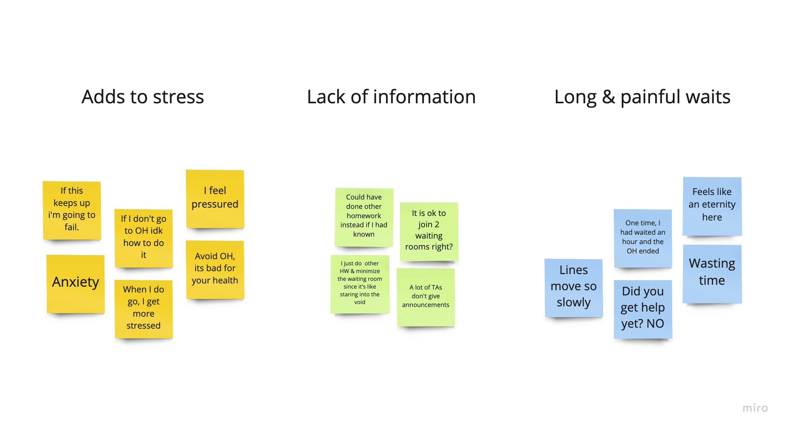
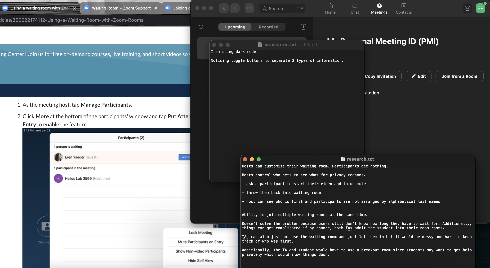
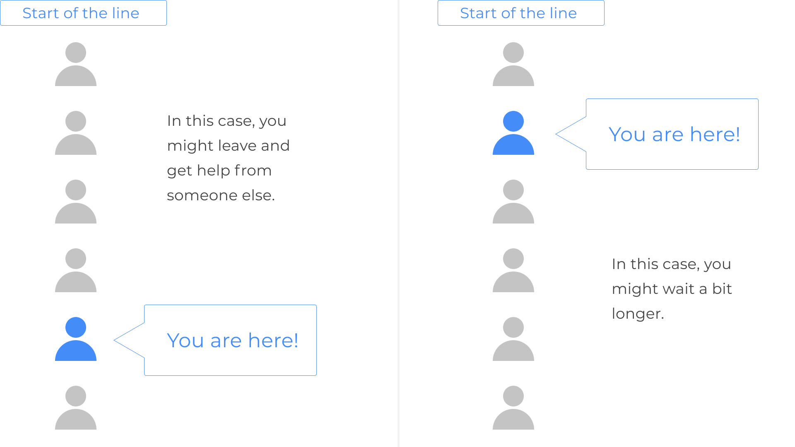
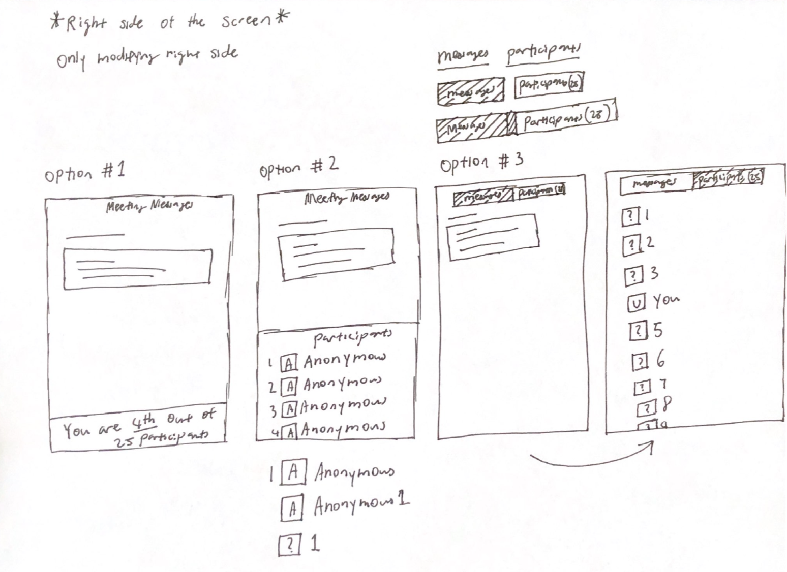
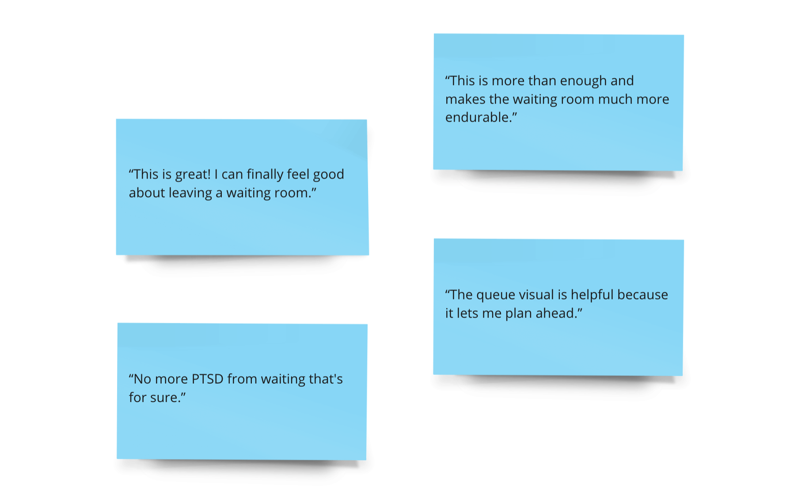

I am not associated with Zoom in any way.
2 Weeks
Solo
UX Designer
User Research
Product Research
Wireframing
Prototyping
My dilemma
Recently, I went to a drop-in office hour to get help from a TA (Teaching Assistant). I remember being in the waiting room for a long time. Although other drop-in office hours were open, I was hesitant to leave the waiting room.
I was hesitant to leave because I convinced myself that I was near the front of the line. As such, if I wait a bit longer, I would likely be admitted. On the other hand, If I left, I would have wasted time. Plus, there was no guarantee the other TA waiting rooms were not crowded, which meant I have to spend more time waiting.
“How might I make the waiting room more tolerable for Attendees during crowded drop-in hours?”
The current waiting room is bad

How many people before me? How long will I have to wait? These questions do not get answered, so I am stuck in the waiting room hesitant to leave. Unfortunately, during that long wait, I may want to go to the bathroom, get some food, or take a walk to clear my mind a bit. Since I convinced myself that I would be next, I don't do any of those things and I would sit for hours.
17 others agree with me
I interviewed 17 classmates and friends who have been in crowded drop-in office hours/meetings. I conducted these thirty minute interviews over text message as I waited in waiting rooms, which puts into perspective the long waiting times. Here are some of my findings.
Checking for existing solutions
Before I started designing, I needed to be sure there was no existing solutions. This step is important because designing a new solution when a potential solution already exists would not be an efficient use of time. If a solution does exist, then my objective would shift to making that existing solution more discoverable since it was clear that me and 17 other people didn't know about it.
However, after extensive exploration of the internet and the software itself, I came to the conclusion that there were no settings or hidden features that Zoom has that would address the problem.
Research findings
Although there was no existing solution, the time I spent conducting the research was not wasted. I learned a lot more about Zoom's design choices such as toggle bars rather than the placement of two buttons side by side.

Proposed solution
Add a visualization of the queue
Modify the participant's view of the waiting room to show the number of people and the participant's place in the queue. Showing the participant's position in line will help them make decisions. If they are far from the front, they may want to get help from someone else. If they are close to the front, they may decide to wait since they could receive assistance soon. Additionally, my solution needs to keep all participants anonymous since that is one of the main purposes for a waiting room.
Sketching
After brainstorming a few potential solutions, I settled on option three because it did not give the user too much information at once. As I was sketching, I also experimented with various annonymous queue icons. Ultimately, I decided on a question mark with a number as its name. This is both for the purpose of high readibility and max distinctiveness from the user's queue icon.
Wireframing
I chose to use a toggle bar to separate the meeting messages and participants because during my exploration of the Zoom software, I noticed that the toggle bar was frequently used to keep two different functions separated.
New waiting room concept uses the toggle bar to display the number of participants in the waiting room. Additionally, there is also a visual representation of the queue and a participant's place in line. Anonymity is also maintained.
Prototyping
Improved Zoom waiting room meeting messages tab
Improved Zoom waiting room participants tab
I overlayed my new design on a screenshot of the current waiting room for time efficiency since I was merely modifying the right side of the waiting room screen.
User feedback
So, what did other students think about my modifications to Zoom's waiting room?

The takeaway
Learning more about the product being redesigned is always a benefit.
Before designing a solution for a product, check for an existing solution. Although other people and I have the same problem, we may have overlooked hidden settings that offer a solution. If that were true, my priority would be to redesign that setting to be more noticeable.
Even though my research of the Zoom app showed no existing solution, knowing more about the product helped me create a solution consistent with existing design choices (such as usage of the toggle bar).